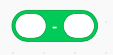

Some of you may be familiar with the artist who drew the painting above - M.C. Escher. He specialized in art that makes you question reality: repeated patterns, drawings within drawings (as shown above, impossible buildings, and more!
The painting above is a prime example of recursion in his art. Recursion is usually seen in math or in computer science, but sometimes it makes its way into other fields. So what exactly does recursion mean?
In somewhat complicated terms, recursion is the process of repeating items in a self-similar way. In coding applications, this means creating a function that calls itself within that function.
It would probably be easiest to understand if I give you some concrete examples. Have you ever wondered what every number from 1 to 10 added up was? Or what ever number from 1 to 10 multiplied by each other is? Maybe you've wondered about the Fibonacci Sequence (where you add up a number that is the sum of the two numbers before it; 0+1+1+2+3+5+8+13+...)?
You can do this rather quickly by using a recursive program. You would create a function that within it, performs some action and then calls itself with a different input.
More specifically, if we're thinking about adding every number from 1 to 10, we have to add up 10 + 9 + 8 + 7 + 6 + 5 + 4 + 3 + 2 + 1. So instead of doing that math ourselves, we create a function that takes in a number and adds it to the number directly below it. Let's discuss this in steps:
- Let's call our function "Sum," and Sum takes in a number "Int" and will give back the sum of 1 + 2 + ... + Int. In our case, Int = 10. We call our function as follows: Sum(10).
- Sum will do the following: take the input Int and add it to a variable called "Total." It will then call Sum again with the input being the Int - 1. In our case, we would call Sum(10) and within this, it would call Sum(9). When Sum(9) runs, it will call Sum(8), and so on and so forth.
- By doing this, we always add the number below it to the Total.
- However, there's a small problem with this: we can end up adding every number less than our original input! This means adding 0, -1, -2, -3, ..., until negative infinity!
- We must tell the program to stop adding numbers when the Int = 1. We can do this using one of the loops in the Controls section in Scratch.
Continue to the next step to remix the Codelab and to work through an example together! This lab will be explained step by step so that you can understand this concept better.
In this codelab, you'll add up all of the numbers from 1 to any number that a user wants.
What you'll learn
- Use ask and answer blocks for user input.
- How to use variables to keep track of the user's answer and the total sum.
- How to make your own function with My Blocks.
- What recursion looks like in Scratch and coding in general!
Open the starter project and click Remix.
First, we need the Scratch Cat to explain to the user what this program is doing and ask what number they'd like to sum to.
Steps to explain the program:
- Use the say block (found under Looks) to have the Scratch Cat say something to the user. Have the cat say something along the lines of: "I can tell you the sum from 1 to any positive integer you want! Press the space key to continue."
- Make sure that the cat says this repeatedly until the space key is pressed. What kind of loop and sensing blocks can you use to do this?
Steps to ask the user for input:
- Ask the user "What positive integer do you choose?" which is found in the sensing section.
- Create a variable called "int" to hold the user's response.
- Store the user's answer in "int." Use the answer block that is under the "ask" block.

Now we will use the My Block section to create our own function. We'll call this function "sum" and require an input called "number."
What happens after you create the block?
- Your "My Blocks" section should look like the following:
- The block below will show up where your scripts are:
Now we will complete the function so that it will compute the sum from 1 to number (the input in the function).
How can we calculate the sum? Steps:
- Create a variable called "total" that will hold the sum throughout the program.
- Set total to equal 0 at the beginning of all of the scripts, under the "when green flag clicked" hat block.
- Add number to total (increase total by the input in the function). You can use the "number" block by dragging it from where it says "number" next to the word "sum" in your script. It should look like the following:
- Here is the recursive step: after you change the total to increase by the number, call the sum function again, but it's input should be the current input minus one. Here's how to do that:
- First, you need to decrease number by 1. You can do this with the following operator.
- Call sum with the piece of code created immediately before as the input; it should look like this:
- Unless you tell the recursive function when to stop, it will continue forever. Let's fix this. Add an if statement to check if the number is greater than 0. This will make sure that our function will stop when number = 1.
- Move the other two blocks from before (changing the variable and the recursive call) into this if statement.

Your sum function should look like this at the end:
Finally, let's finish the entire program. Your script should currently look like this:
- In order for the sum function to run at all, we need to call it in the script. Call sum with the input being the variable "int" that we created and defined earlier.
- Lastly, have the Scratch Cat tell the user the sum. You can join together words and variables with the join operator. It looks like the following:
Here's how your script should look at the end: